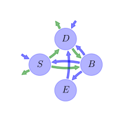

General Overview

This report is the result of the use of the Python 3.4 package Sympy (for symbolic mathematics), as means to translate published models to a common language. It was created by Holger Metzler (Orcid ID: 0000-0002-8239-1601) on 17/03/2016, and was last modified on lm.
About the model
The model depicted in this document considers soil organic matter decomposition. It was originally described by S. D. Allison, Wallenstein, & Bradford (2010).
Further references
Li, Wang, Allison, Mayes, & Luo (2014): The notation here is adapted to the one in this paper. Temperature sensitivities for \(V\), \(V_{U}\), \(K\), and \(K_{U}\) follow the Arrhenius relationship.
Abstract
Most ecosystem models predict that climate warming will stimulate microbial decomposition of soil carbon, producing a positive feedback to rising global temperatures. Although field experiments document an initial increase in the loss of CO\(_{2}\) from soils in response to warming, in line with these predictions, the carbon dioxide loss from soils tends to decline to control levels within a few years. This attenuation response could result from changes in microbial physiological properties with increasing temperature, such as a decline in the fraction of assimilated carbon that is allocated to growth, termed carbon-use efficiency. Here we explore these mechanisms using a microbial-enzyme model to simulate the responses of soil carbon to warming by 5°C. We find that declines in microbial biomass and degradative enzymes can explain the observed attenuation of soil-carbon emissions in response to warming. Specifically, reduced carbon-use efficiency limits the biomass of microbial decomposers and mitigates the loss of soil carbon. However, microbial adaptation or a change in microbial communities could lead to an upward adjustment of the efficiency of carbon use, counteracting the decline in microbial biomass and accelerating soil-carbon loss. We conclude that the soil-carbon response to climate warming depends on the efficiency of soil microbes in using carbon.
Keywords
differential equations, nonlinear, time variant, Michaelis-Menten
Principles
mass balance, substrate dependence of decomposition, heterogeneity of speed of decay, internal transformations of organic matter, environmental variability effects, substrate interactions
State Variables
The following table contains the available information regarding this section:
Information on State Variables
| \(S\) |
soil organic carbon pool |
\(mgC cm^{-3}\) |
| \(D\) |
dissolved organic carbon pool |
\(mgC cm^{-3}\) |
| \(B\) |
microbial biomass pool |
\(mgC cm^{-3}\) |
| \(E\) |
enzyme pool |
\(mgC cm^{-3}\) |
Constants
The following table contains the available information regarding this section:
Information on Constants
| \(R\) |
ideal gas constant |
\(R=0.008314\) |
\(kJ mol^{-1} K^{-1}\) |
Parameters
The following table contains the available information regarding this section:
Information on Parameters
| \(r_{B}\) |
microbial biomass turnover rate |
parameter |
\(h^{-1}\) |
| \(r_{E}\) |
enzyme production rate |
parameter |
\(h^{-1}\) |
| \(r_{L}\) |
enzyme loss rate |
parameter |
\(h^{-1}\) |
| \(a_{BS}\) |
fraction of dead microbial biomass transferred to soil organic matter |
parameter |
- |
| \(V_{Umax}\) |
reference for maximum rate of dissolved organic carbon uptake |
parameter |
\(h^{-1}\) |
| \(V_{max}\) |
reference for maximum rate of soil organic carbon decomposition |
parameter |
\(h^{-1}\) |
| \(E_{aU}\) |
activation energy to convert substrate into product |
parameter |
\(kJ mol^{-1}\) |
| \(E_{a}\) |
activation energy for soil organic carbon decomposition |
parameter |
\(kJ mol^{-1}\) |
| \(\epsilon_{0}\) |
base carbon uptake efficiency |
parameter |
- |
| \(\epsilon_{s}\) |
carbon uptake efficieny slope |
parameter |
\(°C^{-1}\) |
| \(K_{U0}\) |
base half saturation constant for carbon uptkae |
parameter |
\(mg C cm^{-3}\) |
| \(K_{Us}\) |
half saturation constant slope for carbon uptake |
parameter |
\(mg C cm^{-3} °C^{-1}\) |
| \(K_{0}\) |
base half saturation constant for soil organic carbon decomposition |
parameter |
\(mg C cm^{-3}\) |
| \(K_{s}\) |
half saturation constant slope for soil organic carbon decomposition |
parameter |
\(mg C cm^{-3} °C^{-1}\) |
Additional Variables
The following table contains the available information regarding this section:
Information on Additional Variables
| \(t\) |
time |
- |
variable |
\(hr\) |
| \(T\) |
temperature |
- |
variable |
\(°C\) |
| \(V_{U}\) |
maximum dissolved organic carbon uptake rate |
\(V_{U}=V_{Umax}\cdot \operatorname{exp}\left(\frac{- E_{aU}}{R\cdot \left(T+273\right)}\right)\) |
variable |
- |
| \(V\) |
maximum decomosition rate of soil orgacic carbon |
\(V=V_{max}\cdot \operatorname{exp}\left(\frac{- E_{a}}{R\cdot \left(T+273\right)}\right)\) |
variable |
- |
| \(E_{C}\) |
carbon uptake efficiency |
\(E_{C}=\epsilon_{0}+\epsilon_{s}\cdot T\) |
variable |
- |
| \(K_{U}\) |
half saturation constant for carbon uptake |
\(K_{U}=K_{U0}+K_{Us}\cdot T\) |
variable |
\(mg C cm^{-3}\) |
| \(K\) |
half saturation constant for soil organic carbon decomposition |
\(K=K_{0}+K_{s}\cdot T\) |
variable |
\(mg C cm^{-3}\) |
The following table contains the available information regarding this section:
Information on Input Components
| \(I_{S}\) |
soil organic carbon input rate |
parameter |
\(mg C cm^{-3} h^{-1}\) |
| \(I_{D}\) |
dissolved organic carbon input rate |
parameter |
\(mg C cm^{-3} h^{-1}\) |
Components
The following table contains the available information regarding this section:
Information on Components
| \(C\) |
carbon content |
\(C=\left[\begin{matrix}S\\D\\B\\E\end{matrix}\right]\) |
| \(I\) |
input vector |
\(I=\left[\begin{matrix}I_{S}\\I_{D}\\0\\0\end{matrix}\right]\) |
| \(T_{M}\) |
transition operator |
\(T_{M}=\left[\begin{matrix}-1 & 0 &\frac{a_{BS}\cdot r_{B}}{r_{B} + r_{E}} & 0\\1 & -1 &\frac{r_{B}\cdot\left(- a_{BS} + 1\right)}{r_{B} + r_{E}} & 1\\1 & E_{C} & -1 & 0\\0 & 0 &\frac{r_{E}}{r_{B} + r_{E}} & -1\end{matrix}\right]\) |
| \(N\) |
decomposition operator |
\(N=\left[\begin{matrix}\frac{E\cdot V}{K + S} & 0 & 0 & 0\\0 &\frac{B\cdot V_{U}}{D + K_{U}} & 0 & 0\\0 & 0 & r_{B} + r_{E} & 0\\0 & 0 & 0 & r_{L}\end{matrix}\right]\) |
| \(f_{s}\) |
the right hand side of the ode |
\(f_{s}=I+T_{M}\cdot N\cdot C\) |
Pool model representation
|
|
Flux description
|

Figure 1: Pool model representation
|
\(S: I_{S}\)
\(D: I_{D}\)
Output fluxes
\(S: -\frac{E\cdot S\cdot V_{max}\cdot e^{-\frac{E_{a}}{0.008314\cdot T + 2.269722}}}{K_{0} + K_{s}\cdot T + S}\)
\(D: -\frac{B\cdot D\cdot V_{Umax}\cdot e^{-\frac{E_{aU}}{0.008314\cdot T + 2.269722}}}{D + K_{U0} + K_{Us}\cdot T}\cdot\left(T\cdot\epsilon_{s} +\epsilon_{0} - 1\right)\)
Internal fluxes
\(S \rightarrow D: \frac{E\cdot S\cdot V_{max}\cdot e^{-\frac{E_{a}}{0.008314\cdot T + 2.269722}}}{K_{0} + K_{s}\cdot T + S}\)
\(S \rightarrow B: \frac{E\cdot S\cdot V_{max}\cdot e^{-\frac{E_{a}}{0.008314\cdot T + 2.269722}}}{K_{0} + K_{s}\cdot T + S}\)
\(D \rightarrow B: \frac{B\cdot D\cdot V_{Umax}\cdot e^{-\frac{E_{aU}}{0.008314\cdot T + 2.269722}}}{D + K_{U0} + K_{Us}\cdot T}\cdot\left(T\cdot\epsilon_{s} +\epsilon_{0}\right)\)
\(B \rightarrow S: B\cdot a_{BS}\cdot r_{B}\)
\(B \rightarrow D: B\cdot r_{B}\cdot\left(- a_{BS} + 1\right)\)
\(B \rightarrow E: B\cdot r_{E}\)
\(E \rightarrow D: E\cdot r_{L}\)
|
The right hand side of the ODE
\(\left[\begin{matrix}B\cdot a_{BS}\cdot r_{B} -\frac{E\cdot S\cdot V_{max}\cdot e^{-\frac{E_{a}}{0.008314\cdot T + 2.269722}}}{K_{0} + K_{s}\cdot T + S} + I_{S}\\-\frac{B\cdot D\cdot V_{Umax}\cdot e^{-\frac{E_{aU}}{0.008314\cdot T + 2.269722}}}{D + K_{U0} + K_{Us}\cdot T} + B\cdot r_{B}\cdot\left(- a_{BS} + 1\right) +\frac{E\cdot S\cdot V_{max}\cdot e^{-\frac{E_{a}}{0.008314\cdot T + 2.269722}}}{K_{0} + K_{s}\cdot T + S} + E\cdot r_{L} + I_{D}\\\frac{B\cdot D\cdot V_{Umax}\cdot e^{-\frac{E_{aU}}{0.008314\cdot T + 2.269722}}}{D + K_{U0} + K_{Us}\cdot T}\cdot\left(T\cdot\epsilon_{s} +\epsilon_{0}\right) + B\cdot\left(- r_{B} - r_{E}\right) +\frac{E\cdot S\cdot V_{max}\cdot e^{-\frac{E_{a}}{0.008314\cdot T + 2.269722}}}{K_{0} + K_{s}\cdot T + S}\\B\cdot r_{E} - E\cdot r_{L}\end{matrix}\right]\)
The Jacobian (derivative of the ODE w.r.t. state variables)
\(\left[\begin{matrix}\frac{E\cdot S\cdot V_{max}\cdot e^{-\frac{E_{a}}{0.008314\cdot T + 2.269722}}}{\left(K_{0} + K_{s}\cdot T + S\right)^{2}} -\frac{E\cdot V_{max}\cdot e^{-\frac{E_{a}}{0.008314\cdot T + 2.269722}}}{K_{0} + K_{s}\cdot T + S} & 0 & a_{BS}\cdot r_{B} & -\frac{S\cdot V_{max}\cdot e^{-\frac{E_{a}}{0.008314\cdot T + 2.269722}}}{K_{0} + K_{s}\cdot T + S}\\-\frac{E\cdot S\cdot V_{max}\cdot e^{-\frac{E_{a}}{0.008314\cdot T + 2.269722}}}{\left(K_{0} + K_{s}\cdot T + S\right)^{2}} +\frac{E\cdot V_{max}\cdot e^{-\frac{E_{a}}{0.008314\cdot T + 2.269722}}}{K_{0} + K_{s}\cdot T + S} &\frac{B\cdot D\cdot V_{Umax}\cdot e^{-\frac{E_{aU}}{0.008314\cdot T + 2.269722}}}{\left(D + K_{U0} + K_{Us}\cdot T\right)^{2}} -\frac{B\cdot V_{Umax}\cdot e^{-\frac{E_{aU}}{0.008314\cdot T + 2.269722}}}{D + K_{U0} + K_{Us}\cdot T} & -\frac{D\cdot V_{Umax}\cdot e^{-\frac{E_{aU}}{0.008314\cdot T + 2.269722}}}{D + K_{U0} + K_{Us}\cdot T} + r_{B}\cdot\left(- a_{BS} + 1\right) &\frac{S\cdot V_{max}\cdot e^{-\frac{E_{a}}{0.008314\cdot T + 2.269722}}}{K_{0} + K_{s}\cdot T + S} + r_{L}\\-\frac{E\cdot S\cdot V_{max}\cdot e^{-\frac{E_{a}}{0.008314\cdot T + 2.269722}}}{\left(K_{0} + K_{s}\cdot T + S\right)^{2}} +\frac{E\cdot V_{max}\cdot e^{-\frac{E_{a}}{0.008314\cdot T + 2.269722}}}{K_{0} + K_{s}\cdot T + S} & -\frac{B\cdot D\cdot V_{Umax}\cdot e^{-\frac{E_{aU}}{0.008314\cdot T + 2.269722}}}{\left(D + K_{U0} + K_{Us}\cdot T\right)^{2}}\cdot\left(T\cdot\epsilon_{s} +\epsilon_{0}\right) +\frac{B\cdot V_{Umax}\cdot e^{-\frac{E_{aU}}{0.008314\cdot T + 2.269722}}}{D + K_{U0} + K_{Us}\cdot T}\cdot\left(T\cdot\epsilon_{s} +\epsilon_{0}\right) &\frac{D\cdot V_{Umax}\cdot e^{-\frac{E_{aU}}{0.008314\cdot T + 2.269722}}}{D + K_{U0} + K_{Us}\cdot T}\cdot\left(T\cdot\epsilon_{s} +\epsilon_{0}\right) - r_{B} - r_{E} &\frac{S\cdot V_{max}\cdot e^{-\frac{E_{a}}{0.008314\cdot T + 2.269722}}}{K_{0} + K_{s}\cdot T + S}\\0 & 0 & r_{E} & - r_{L}\end{matrix}\right]\)
References
Allison, S. D., Wallenstein, M. D., & Bradford, M. A. (2010). Soil-carbon response to warming dependent on microbial physiology. Nature Geoscience, 3(5), 336–340. http://doi.org/10.1038/ngeo846
Li, J., Wang, G., Allison, S. D., Mayes, M. A., & Luo, Y. (2014). Soil carbon sensitivity to temperature and carbon use efficiency compared across microbial-ecosystem models of varying complexity. Biogeochemistry, 119(1-3), 67–84.